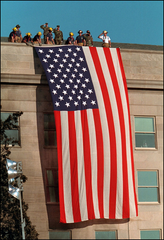

A National Day of Unity and Mourning
America confronts the first full day after the September 11 attacks, 2001
By Wm. E. McMullen II

September 12, 2001 — One day after the deadliest terrorist attacks in American history, Congress declared September 12 a National Day of Unity and Mourning. Across the country, Americans awoke to a changed nation—grieving thousands of lives, waiting for news of missing family members and confronting uncertainty about what might happen next.
The Senate passed Joint Resolution 22, and the House adopted a parallel resolution, condemning the attacks and expressing sympathy for the victims and their families. Congress also commended the courage of police officers, firefighters, emergency personnel and ordinary citizens who responded to the disaster.
The resolutions declared that Congress would adjourn out of respect for the victims. Yet the Capitol had reopened for legislative business under dramatically increased security. Members and staff returned to a building that many believed had itself been an intended target of the hijacked airplane that crashed in Pennsylvania.
The Florida Connection
For Floridians, September 12 was inseparable from what had happened the previous morning in Sarasota. President George W. Bush had been visiting Emma E. Booker Elementary School when he learned that a second aircraft had struck the World Trade Center and that the United States was under attack.
Bush spoke publicly from the school before departing Sarasota aboard Air Force One. Because of continuing security concerns, he was flown first to military installations in Louisiana and Nebraska before returning to Washington. The next day, he met with his national security team and visited rescue workers at the damaged Pentagon.
Florida communities joined the national mourning while airports remained largely closed and families struggled to contact loved ones. The state's connection to the attacks would deepen as investigators examined the hijackers' activities in Florida and as Florida Senator Bob Graham and Representative Porter Goss later led the congressional intelligence inquiry.
Why It Matters
September 12 marked the transition from immediate catastrophe to national response. Mourning, rescue work, heightened security and the first major government decisions all unfolded together. The unity expressed that day would soon be followed by consequential debates over war, intelligence, aviation security, emergency preparedness and civil liberties.
For Florida history, the story completes a remarkable two-day sequence. A routine presidential education visit in Sarasota became part of a national emergency on September 11. On September 12, Florida and the nation began living with its consequences.
Sources for Additional Reading
- U.S. Government Publishing Office — S.J. Resolution 22 — The official September 12 resolution declaring a National Day of Unity and Mourning.
- George W. Bush Presidential Library — September 11, 2001 Terrorist Attacks — Archival records, photographs and educational resources documenting the presidential response.
September 11: President Bush Learns of the Attacks in Sarasota
Also September 12: Gemini XI Launches from Cape Kennedy
Explore the daily archive: Discover more events that shaped Florida's communities, culture and history.
Today in Florida History